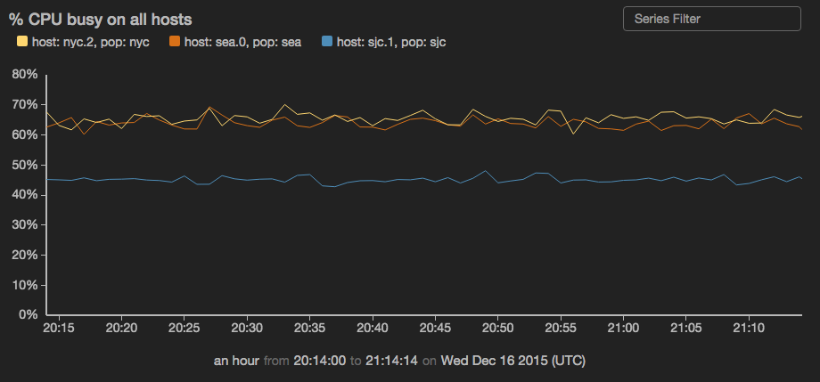
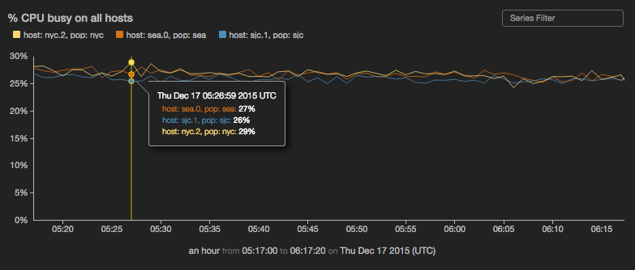

timechart
Create a time series chart. Time charts support multiple series and can be combined with
view events.

- Comparing data from different intervals
- Overlaying events on time charts
- Interacting with time charts
- Zooming on historical data
- Multi-series time charts
- Creating a dual-axis time chart
view timechart -o {
id: 'string',
title: 'string',
duration: duration,
markerSize: n,
overlayTime: boolean,
downsample: boolean,
xScale: {
label: 'string',
tickFormat: 'd3FormatString'
},
yScales: {
primary: {
label: 'string',
tickFormat: 'd3FormatString',
minValue: n,
maxValue: n,
displayOnAxis: 'left'
},
secondary: {
label: 'string',
tickFormat: 'd3FormatString',
minValue: n,
maxValue: n,
displayOnAxis: 'right'
}
},
keyField: 'fieldname',
valueField: 'fieldname',
timeField: 'fieldname',
interval: 'n',
series: [
{
name: 'seriesname',
label: 'string',
yScale: 'primary|secondary',
color: 'color',
geom: 'line|bars'
}
]
}
or
view timechart -id 'string' -title 'string' -duration duration -downsample boolean -markerSize n -overlayTime boolean
-xScale.label 'string' -xScale.tickFormat 'd3FormatString'
-yScales.primary.label 'string' -yScales.primary.tickFormat 'd3FormatString' -yScales.primary.minValue 'n' -yScales.primary.maxValue 'n' -yScales.primary.displayOnAxis 'left'
-yScales.secondary.label 'string' -yScales.secondary.tickFormat 'd3FormatString' -yScales.secondary.minValue 'n' -yScales.secondary.maxValue 'n' -yScales.secondary.displayOnAxis 'left'
-keyField 'fieldname' -valueField 'fieldname' -timeField 'fieldname'
-interval n -series [{name : 'seriesname', label : 'string', yScale : 'primary|secondary', color : 'color', geom : 'line|bars'}]
See Defining sink parameters for an explanation of how sink parameters can be expressed as object literals.
| Parameter | Description | Required? |
|---|---|---|
-id |
An identifier for this sink that serves as a handle for referencing the object in Juttle syntax; conceptually identical to a variable name | No |
-title |
The title for the user-visible output, if it has one; the value may be any valid Juttle expression that produces a string | No; defaults to the name field that is present in all metrics points |
-duration |
The span of time to display, either in seconds (>=10) or as a Juttle moment literal. |
No |
-downsample |
Whether the timechart should downsample data by averaging. Downsampling is triggered when the point density exceeds 1 point per 2 pixels. | No; defaults to true |
-markerSize |
he diameter of the circle representing each point, in pixels When your data is not very dense, the chart renders distinctly separate circles connecting by a one-pixel line. For denser data, circles may be rendered close together, giving the appearance of a continuous line of the specified thickness. |
No; defaults to 0 (circle not shown) |
-overlayTime |
Whether the -duration value should be used to overlay time ranges. When true, the value of -duration drives the time-length of each overlayed range. | No; defaults to false |
-xScale.label |
The string that labels the X scale | No; defaults to the value of the timefield |
-xScale.tickFormat |
Customize the unit display for this axis, using the d3 number formatting syntax | No |
-yScales.primary.label |
A string to label the Y axis | No; default is the name of the -valueField |
-yScales.primary.tickFormat |
Customize the unit display for the Y axis, using the d3 number formatting syntax | No |
-yScales.primary.minValue |
The value at the bottom of the Y scale | No; the default is automatically derived from your data |
-yScales.primary.maxValue |
The value at the top of the Y scale | No; the default is automatically derived from your data |
-yScales.primary.displayOnAxis |
Where to display the Y axis; must be exactly one of the following depending on whether your bar chart is oriented vertically or horizontally:
|
No; the default is left |
-yScales.secondary.label |
The string that labels the secondary Y scale | No; by default no label is displayed |
-yScales.secondary.tickFormat |
Customize the unit display for this axis, using the d3 number formatting syntax | No |
-yScales.secondary.minValue |
The value at the bottom of the Y scale | No; the default is automatically derived from your data |
-yScales.secondary.maxValue |
The value at the top of the Y scale | No; the default is automatically derived from your data |
-yScales.secondary.displayOnAxis |
The axis on which to display this scale, either 'left' or 'right' | No; defaults to 'left' |
-keyField |
The field containing the name of the series to which each point belongs | Required when series is configured; otherwise Jut looks for unique streams and creates a series for each one For simple metrics, the key field usually defaults to the |
-valueField |
The name of the field to use as the source for the numeric values | No; defaults to the valuefield that is present in all metrics points. If no value field is present, the first numeric field in the stream is used. |
-timeField |
The field containing the time stamp | No; defaults to the time field |
-interval |
The duration threshold between two consecutive points, above which they will not be connected by a line | No; all points are connected by lines |
-series |
Configure one or more data series individually, using one or more items in an array with these parameters: | No |
-series [
{
name : 'seriesname',
label : 'string',
yScale : 'primary|secondary',
color : 'color',
geom : 'line|bars'
},
{
name : 'someotherseries',
...
}
]
Series Parameters
-seriesParameter |
Description |
|---|---|
name |
A series name that can be found in the specified -keyField omit this option to configure all series in the data set |
label |
An optional string to override the scale label for this series |
yScale |
The Y scale to use for this series, either "primary" or "secondary"; the default is "primary" |
color |
The color to use for this series, specified with any CSS3-supported hex or name value; if not specified, a color is selected from the built-in palette |
geom |
Set this to 'bars'to display this series as bars on the time chart; the width of each bar is the interval between the current point and the previous point. The default is 'line' |
Example: Timechart with default series selection
read stochastic -source 'cdn' -last :1 hour: -nhosts 3 -source_type 'metric' name='cpu'
| view timechart
-title '% CPU busy on all hosts'
-yScales.primary.tickFormat '%'

Example: Compare yesterday's CPU usage with usage today so far
read stochastic -source 'cdn' -source_type 'metric' -last :2 days: -daily .5 name = 'cpu'
| view timechart
-duration :1 day:
-overlayTime true

Example: Compare CPU usage from today with the same day last week
(
read stochastic -source 'cdn' -from :7 days ago: -to :6 days ago: -daily .5 -source_type 'metrics' name = 'cpu';
read stochastic -source 'cdn' -from :1 days ago: -to :now: -daily .5 -source_type 'metrics' name = 'cpu'
)
| view timechart
-duration :1 day:
-overlayTime true

Example: Configure a multi-series time chart
sub src(cate, coefficient) {
emit -limit 100 -hz 10 |
put category = cate |
put value = Math.random() * coefficient
}
(
src -cate "smaug" -coefficient 10;
src -cate "sauron" -coefficient 20;
src -cate "saruman" -coefficient 1;
) |
view timechart -o {
keyField: 'category',
yScales: {
secondary: {}
},
series: [
{
label : 'smaug',
color : 'red',
name : 'smaug'
},
{
label : 'sauron',
color : '#228B22',
name : 'sauron'
},
{
label : 'saruman',
color : 'burlywood',
name : 'saruman',
yScale : 'secondary'
}
]
}

Example: Configure one series to be displayed as bars, while others are displayed as lines
read stochastic -source 'srch_cluster' -from :2 minutes ago: // Get data from 2 minutes ago and ingest live data
name = 'response_ms' // Filter our all metrics except response_ms
| reduce -every :2s: p90 = percentile('value', .9) by service // Calculate p90 response time
| view timechart -valueField 'p90' // Plot data on a chart
-title 'Response time (ms) by Service'
-series [{name : 'search', geom : 'bars'}]
-duration :2 minutes: